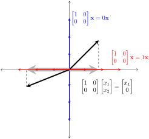

At several places in this course it has been valuable to restrict ourselves to square matrices, and we do so again when discussing eigenvalues and eigenvectors. In Theorem 2.6.12, we proved that any \(n \times n\) matrix induces a linear transformation from \(\R^n\) to itself. For our first few examples, let us consider the case \(n = 2\text{.}\)
The following animation helps us to visualize the matrix transformation associated with \(A\text{.}\) Given a vector \(\mathbf{x}\) in \(\R^2\text{,}\) its image, \(A\mathbf{x}\text{,}\) is also in \(\R^2\text{.}\) Set slider to \(0\) to see input vectors \(\mathbf{x}\text{;}\) change it to \(1\) see their images \(A\mathbf{x}\text{.}\)
Figure6.1.1.A larger version of this activity is available here 1
geogebra.org
.
For many vectors, \(A\mathbf{x}\) does not point in the same direction as \(\mathbf{x}\text{.}\) This is the case for all of the gray vectors in the animation, as we can see that \(A\mathbf{x}\) points in a different direction than \(\mathbf{x}\text{.}\) But if we look at the red vectors (vectors parallel to \([-1,1]\)), we notice that they appear unchanged in magnitude and direction. Such vectors are sometimes called fixed vectors of \(A\text{.}\) Looking next at the blue vectors (vectors parallel to \([1,1]\)), we observe that the magnitudes of the vectors are changed, but the direction in which the blue vectors point is unchanged by this linear transformation.
In Exploration 6.1.1 we found that certain vectors do not change direction under the linear transformation induced by matrix \(A\text{.}\) Such vectors are examples of eigenvectors of \(A\text{.}\) In general, any nonzero vector whose image under a matrix transformation is parallel to the original vector is called an eigenvector of the matrix that induced the transformation. The following definition captures this idea algebraically.
Definition6.1.2.
Let \(A\) be an \(n \times n\) matrix. We say that a non-zero vector \(\mathbf{x}\) is an eigenvector of \(A\) if
for some scalar \(\lambda\text{.}\) We say that \(\lambda\) is an eigenvalue of \(A\) associated with the eigenvector \(\mathbf{x}\text{.}\)
Let’s revisit Exploration 6.1.1 in light of Definition 6.1.2. In the exploration, we observed visually that vectors parallel to \([1,1]\) were eigenvectors associated with
as these vectors changed length but remained parallel to the original vector under the linear transformation induced by \(A\text{.}\) To verify this algebraically, observe that all vectors parallel to \([1,1]\) can be written in the form \([a,a]\text{,}\)\((a\neq 0)\text{.}\) We compute
This shows that \([1,-1]\) is a fixed vector and an eigenvector of \(A\) which has a corresponding eigenvalue of \(1\text{.}\)
The above discussion leads us to the following result.
Theorem6.1.3.
If \(\mathbf{x}\) is an eigenvector of matrix \(A\) and \(\lambda\) is the corresponding eigenvalue, then every scalar multiple of \(\mathbf{x}\) is also an eigenvector of \(A\) and \(\lambda\) is the corresponding eigenvalue.
A couple of finer points of Definition 6.1.2 require clarification.
The definition requires that eigenvectors be non-zero. Imagine what would happen if we allowed \(\mathbf{x}=\mathbf{0}\) to be an eigenvector of \(A\text{.}\) Clearly \(A\mathbf{0}=\lambda\mathbf{0}\) for all scalars \(\lambda\text{.}\) This means that every number would be an eigenvalue of every matrix. Because eigenvalues are supposed to capture certain information about the matrix, allowing every number to be an eigenvalue of every matrix would defeat the purpose.
Until now, we had talked about eigenvectors as vectors whose images under a matrix transformation are parallel to the original vectors. But the algebraic definition allows non-zero vectors that map to zero to be considered eigenvectors. (What would an eigenvalue of such an eigenvector be?) The zero vector has no direction, so we cannot say that the image of such an eigenvector is parallel to the original vector. However, Example 6.1.5 will illustrate this point.
Note that \(P\) takes a vector in \(\R^2\) and projects it onto the \(x\)-axis, as we learned in Exercise 2.6.3.12.
Which vectors in \(\R^2\) would be the eigenvectors, and what are the corresponding eigenvalues?
Answer.
Since \(P\mathbf{x}\) is the projection of \(\mathbf{x}\) onto the \(x\)-axis, in many cases \(P\mathbf{x}\) and \(\mathbf{x}\) are not parallel. Notice, however, that all of the red vectors located along the \(x\)-axis in the diagram are fixed by \(P\text{.}\) So, for any of the red vectors we have \(P\mathbf{x}=\mathbf{x}=1\mathbf{x}\text{,}\) which means that each of the red vectors is an eigenvector of \(P\) with the corresponding eigenvalue of \(1\text{.}\)

The blue vectors along the y-axis are also eigenvectors. To see this, note that each of the blue vectors is of the form \(\mathbf{x}=[0,x_2]\text{.}\) But then
The GeoGebra interactive below shows the action of \(A\) on several vectors. (Move the slider to \(s=1\) to see the result of the transformation induced by \(A\text{.}\))
Figure6.1.6.
Problem6.1.7.
Note that vectors
\begin{equation*}
\mathbf{x}_1=\begin{bmatrix}3\\1\end{bmatrix} \text{ and }
\mathbf{x}_2=\begin{bmatrix}-2\\1\end{bmatrix}
\end{equation*}
(and their scalar multiples) remain positioned along the same lines even as they change magnitude and direction. This indicates that \(\mathbf{x}_1\) and \(\mathbf{x}_2\text{,}\) along with all of their scalar multiples, are eigenvectors of \(A\text{.}\) What are the eigenvalues associated with these eigenvectors?
Hint.
The interactive shows the result of multiplication by \(A\text{.}\) Consider one eigenvector at a time. Multiplication by what scalar would yield the same result?
Answer.
Eigenvalue associated with \(\mathbf{x}_1\) is \(\lambda_1=3\text{.}\)
Eigenvalue associated with \(\mathbf{x}_2\) is \(\lambda_2=-2\text{.}\)
A natural question is this: does every square matrix have eigenvalues and eigenvectors? We will address this question in later sections and there discover that the answer to this question is ``yes", provided that we permit eigenvalues and entries of eigenvectors to be complex numbers.
The next example is one that requires complex numbers.
Note that \(M\) takes any vector \(\mathbf{x}\) in \(\R^2\) and rotates it \(45^{\circ}\text{,}\) as we saw in [cross-reference to target(s) "ex-rotate45" missing or not unique].
Since \(M\) rotates every vector in \(\R^2\text{,}\)every nonzero vector changes direction, so there are no eigenvectors in the plane. It turns out that \(M\) does have eigenvectors and eigenvalues, but in order to find them we need to work with vectors whose entries are complex numbers. Since these vectors are not in \(\R^2\text{,}\) we cannot see them.
To follow the computation below, you need to recall that the imaginary unit \(i\) is defined to by \(i^2=-1\text{.}\)
Consider the vector
\begin{equation*}
\begin{bmatrix} \frac{\sqrt{2}}{2}\\ \frac{\sqrt{2}}{2} i \end{bmatrix}.
\end{equation*}
We will continue to work with complex numbers as we study eigenvalues and eigenvectors.
Remark6.1.9.
The first in-depth study of eigenvalues can probably be attributed to Fourier as he studied partial differential equations early in the nineteenth century, and in particular when he studied what is known as the heat equation. By the twentieth century mathematicians understood the connections between differential equations and eigenvalues. Systems of differential equations are often best represented by matrices, especially in the context of using computers to find numerical solutions. Most algorithms to solve these systems work by iterating some process, and eigenvalues along with their corresponding eigenvectors indicate what will happen to such a process after many repetitions.
Subsection6.1.1The Characteristic Equation
Let \(A\) be an \(n \times n\) matrix. In the first sections, we learned that the eigenvectors and eigenvalues of \(A\) are vectors \(\mathbf{x}\) and scalars \(\lambda\) that satisfy the equation
\begin{equation}
A \mathbf{x} = \lambda \mathbf{x}.\tag{6.1.1}
\end{equation}
We listed a few reasons why we are interested in finding eigenvalues and eigenvectors, but we did not give any process for finding them. In this section we will focus on a process which can be used for small matrices. For larger matrices, the best methods we have are iterative methods, and we will explore some of these in later sections.
For an \(n \times n\) matrix, we will see that the eigenvalues are the roots of a polynomial called the characteristic polynomial. So finding eigenvalues is equivalent to solving a polynomial equation of degree \(n\text{.}\) Finding the corresponding eigenvectors turns out to be a matter of computing the null space of a matrix, as the following exploration demonstrates.
Exploration6.1.3.
If a vector \(\mathbf{x}\) is an eigenvector satisfying (6.1.1), then clearly it also satisfies \(A\mathbf{x}-\lambda \mathbf{x} = \mathbf{0} \text{.}\) It seems natural at this point to try to factor. We would love to ``factor out’’ \(\mathbf{x}\text{.}\) Here is the procedure:
The middle step was necessary before factoring because we cannot subtract a \(1 \times 1\) scalar \(\lambda\) from an \(n \times n\) matrix \(A\text{.}\)
In the spirit of connecting eigenvalues to previous notions, the following questions are intended to keep you linking concepts together.
Problem6.1.10.
Does the above show that any eigenvector \(\mathbf{x}\) of \(A\) is in the row space, column space or the null space of the related matrix, \(A-\lambda I\text{?}\)
Answer.
The null space.
Problem6.1.11.
Since eigenvectors are non-zero vectors, this means that \(A\) will have eigenvectors if and only if the null space of \(A-\lambda I\) is nontrivial. Which option is correct of the following is correct? The only way that \(\mbox{null}(A-\lambda I)\) can be nontrivial is if \(\mbox{rank}(A-\lambda I)\) is equal to, less than or greater than \(n \text{.}\)
Answer.
Less than \(n \text{.}\)
If the rank of an \(n \times n\) matrix is less than \(n\text{,}\) then the matrix is singular. Since \((A-\lambda I)\) must be singular for any eigenvalue \(\lambda\text{,}\) we see that \(\lambda\) is an eigenvalue of \(A\) if and only if
In theory, Exploration 6.1.3 offers us a way to find eigenvalues. To find the eigenvalues of \(A\text{,}\) one can solve (6.1.2) for \(\lambda\text{.}\)
The characteristic equation \((\lambda-1)(\lambda-3)=0\) has solutions \(\lambda_1=1\) and \(\lambda_2=3\text{.}\) These are the eigenvalues of \(A\text{.}\)
Matrix \(C\) has eigenvalues \(\lambda_1=1\) and \(\lambda_2=4\text{.}\)
In Example 6.1.16, the factor \((\lambda-1)\) appears twice. This repeated factor gives rise to the eigenvalue \(\lambda_1=1\text{.}\) We say that the eigenvalue \(\lambda_1=1\) has algebraic multiplicity \(2\text{.}\)
The three examples above are a bit contrived. It is not always possible to completely factor the characteristic polynomial using only real numbers. However, a fundamental fact from algebra is that every degree \(n\) polynomial has \(n\) roots (counting multiplicity) provided that we allow complex numbers. This is why sometimes eigenvalues and their corresponding eigenvectors involve complex numbers. The next example highlights this point.
So one of the eigenvalues of \(D\) is \(\lambda=0\text{.}\) To get the other eigenvalues we must solve \(\lambda^2-2\lambda+2=0\text{.}\) Using the quadratic formula, we compute that \(\lambda_1=1+i\) and \(\lambda_2=1-i\) are also eigenvalues of \(D\text{.}\)
Let \(D\) be a diagonal matrix. Then the eigenvalues of \(D\) are the entries on the main diagonal.
One final note about eigenvalues. We began this section with the sentence, "In theory, then, to find the eigenvalues of \(A\text{,}\) one can solve (6.1.2) for \(\lambda\text{.}\)" In general, one does not attempt to compute eigenvalues by solving the characteristic equation of a matrix, as there is no simple way to solve this polynomial equation for \(n\gt 4\text{.}\) Instead, one can often approximate the eigenvalues using iterative methods.
Subsection6.1.3Eigenvectors
Once we have computed an eigenvalue \(\lambda\) of an \(n \times n\) matrix \(A\text{,}\) the next step is to compute the associated eigenvectors. In other words, we seek vectors \(\mathbf{x}\) such that \(A\mathbf{x}=\lambda \mathbf{x}\text{,}\) or equivalently,
For any given eigenvalue \(\lambda\) there are infinitely many eigenvectors associated with it. In fact, the eigenvectors associated with \(\lambda\) form a subspace of \(\R^n\text{.}\)
Theorem6.1.21.
Let \(A\) be an \(n\times n\) matrix and let \(\lambda\) be an eigenvalue of \(A\text{.}\) Then the set of all eigenvectors associated with \(\lambda\) is a subspace of \(\R^n\text{.}\)
The set of all eigenvectors associated with a given eigenvalue of a matrix is known as the eigenspace associated with that eigenvalue.
So given an eigenvalue \(\lambda\text{,}\) there is an associated eigenspace \(\mathcal{S}\text{,}\) and our goal is to find a basis of \(\mathcal{S}\text{,}\) for then any eigenvector \(\mathbf{x}\) will be a linear combination of the vectors in that basis. Moreover, we are trying to find a basis for the set of vectors that satisfy (6.1.3), which means we seek a basis for \(\mbox{null}(A-\lambda I)\text{.}\) We have already learned how to compute a basis of a null space.
Let’s return to the examples we did in the first part of this section.
has eigenvalues \(\lambda_1=1\) and \(\lambda_2=3\text{.}\) Compute a basis for the eigenspace associated with each of these eigenvalues.
Answer.
Eigenvectors associated with the eigenvalue \(\lambda_1=1\) are in the null space of \(A-I\text{.}\) So we seek a basis for \(\mbox{null}(A-I)\text{.}\) We compute:
From this we see that the eigenspace \(\mathcal{S}_1\) associated with \(\lambda_1=1\) consists of vectors of the form \([-1,1]t\text{.}\) This means that \(\left\{[-1,1]\right\}\) is one possible basis for \(\mathcal{S}_1\text{.}\)
In a similar way, we compute a basis for \(\mathcal{S}_3\text{,}\) the subspace of all eigenvectors associated with the eigenvalue \(\lambda_2=3\text{.}\) Now we compute:
has eigenvalues \(\lambda_1=0\) and \(\lambda_2=4\text{.}\) Compute a basis for the eigenspace associated with each of these eigenvalues.
Answer.
Let’s begin by finding a basis for the eigenspace \(\mathcal{S}_0\text{,}\) which is the subspace of \(\R^n\) consisting of eigenvectors corresponding to the eigenvalue \(\lambda_1=0\text{.}\) We need to compute a basis for \(\mbox{null}(B-0I) = \mbox{null}(B)\text{.}\) We compute:
From this we see that an eigenvector in \(\mathcal{S}_0\) has the form \([-1/2, 1]t\text{.}\) This means that \(\left\{ [-1/2, 1] \right\}\) is one possible basis for the eigenspace \(\mathcal{S}_0\text{.}\) By letting \(t=-2\text{,}\) we obtain an arguably nicer-looking basis: \({[-1/2, 1]}\text{.}\)
This time there is one free variable. From this we see The eigenvectors in \(\mathcal{S}_4\) have the form \([t,t,t]\text{,}\) so a possible basis for the eigenspace \(\mathcal{S}_4\) is given by
has eigenvalues \(\lambda=0\text{,}\)\(\lambda_1=1+i\text{,}\) and \(\lambda_2=1-i\text{.}\) Compute a basis for the eigenspace associated with each eigenvalue.
Answer.
We first find a basis for the eigenspace \(\mathcal{S}_0\text{.}\) We need to compute a basis for \(\mbox{null}(D-0I)=\mbox{null}(D)\text{.}\) We compute:
From this we see that for any eigenvector \([x_1, x_2, x_3]\) in \(\mathcal{S}_0\) we have \(x_2=0\) and \(x_3=0\text{,}\) but \(x_1\) is a free variable. So one possible basis for the eigenspace \(\mathcal{S}_0\) is given by
There is one free variable. Setting \(x_3=t\text{,}\) we get \(x_1=0\) and \(x_2=ti\text{.}\) From this we see that eigenvectors in \(\mathcal{S}_{1+i}\) have the form \([0,i,1]t\text{,}\) so a possible basis for the eigenspace \(\mathcal{S}_{1+i}\) is given by
We conclude this section by establishing the significance of a matrix having an eigenvalue of zero.
Theorem6.1.27.
A square matrix has an eigenvalue of zero if and only if it is singular.
Proof.
A square matrix \(A\) is singular if and only if \(\det{A}=0\text{.}\)(see Theorem 5.2.13). But \(\det{A}=0\) if and only if \(\det{A-0I}=0\text{,}\) which is true if and only if zero is an eigenvalue of \(A\text{.}\)
Note that \(Q\) takes any vector in \(\R^2\) and projects it onto the \(y\)-axis, as we learned in Exercise 2.6.3.13. Which vectors in \(\R^2\) would be eigenvectors, and what are the corresponding eigenvalues?
Show that \(\begin{bmatrix} \frac{\sqrt{2}}{2}\\ -\frac{\sqrt{2}}{2} i \end{bmatrix}\) is an eigenvector of \(M\text{.}\) What is its corresponding eigenvalue?
Can you find an eigenvector and its corresponding eigenvalue? Can you find another ``eigenpair’’? Can you find all of the eigenvectors of \(A\text{?}\)
8.
The rotation matrix in Example 6.1.8 has complex eigenvectors and eigenvalues. Think geometrically to find an example of a (non-identity) rotation matrix with real eigenvectors and eigenvalues. Enter degree measure between 0 and 360.
Answer.
Rotation through \(180\) degrees.
9.
Can an eigenvalue have multiple eigenvectors associated with it?
Yes.
No.
10.
Can an eigenvector have multiple eigenvalues associated with it?
In the next two exercises, we will prove that the eigenvectors associated with an eigenvalue \(\lambda\) of an \(n \times n\) matrix \(A\) form a subspace of \(\R^n\text{.}\)
12.
Let \(\mathbf{x}\) and \(\mathbf{y}\) be eigenvectors of \(A\) associated with \(\lambda\text{.}\) Show that \(\mathbf{x}+\mathbf{y}\) is also an eigenvector of \(A\) associated with \(\lambda\text{.}\) (This shows that the set of eigenvectors of \(A\) associated with \(\lambda\) is closed under addition).
13.
Show that the set of eigenvectors of \(A\) associated with \(\lambda\) is closed under scalar multiplication.
Exercise Group.
Compute the eigenvalues of the given matrix and find the corresponding eigenspaces.
Compute the three eigenvalues of this matrix and find a basis for each of the eigenspaces of this matrix: \(\mathcal{S}_{\lambda_1}\text{,}\)\(\mathcal{S}_{\lambda_2}\text{,}\) and \(\mathcal{S}_{\lambda_3}\text{.}\)
Prove Theorem 6.1.19. (HINT: Proceed by induction on the dimension n. For the inductive step, compute \(\det(A-\lambda I)\) by expanding along the first column (or row) if \(T\) is upper (lower) triangular.)
Exercise Group.
The following set of problems deals with geometric interpretation of eigenvalues and eigenvectors, as well as linear transformations of the plane.
20.
Recall that a vertical stretch/compression of the plane is a linear transformation whose standard matrix is
Explain why \(\lambda\) is real number if and only if \(\theta\) is a multiple of \(\pi\text{.}\) After this, suppose \(\theta\) is a muliple of \(\pi\text{.}\) Then the eigenspaces corresponding to the two eigenvalues are the same. Which of the following describes the eigenspace?
All vectors in \(\R^2\text{.}\)
All vectors along the \(x\)-axis.
All vectors along the \(y\)-axis.
All vectors along the line \(y=x\text{.}\)
Exercise Group.
A reflection of the plane about the line \(y=mx\) is a linear transformation whose standard matrix is
Verify that the eigenvalues of \(M_{y=mx}\) are \(1\) and \(-1\text{.}\) Then find a basis for eigenspaces \(\mathcal{S}_{1}\) and \(\mathcal{S}_{-1}\text{.}\) (For simplicity, assume that \(m\neq 0\text{.}\))